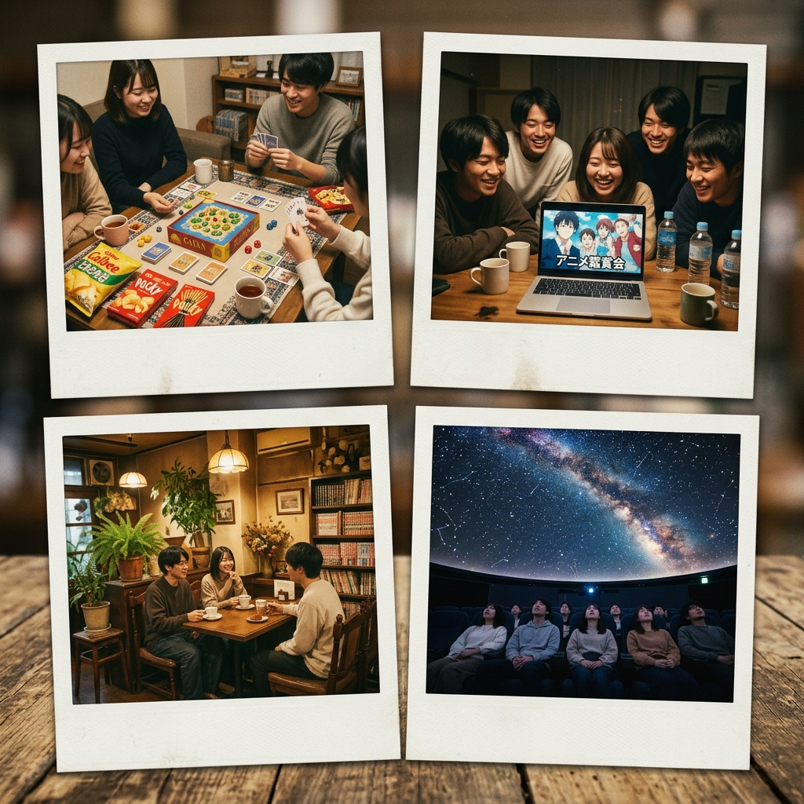

第12回布教会レポート：
マイナーボードゲーム編
「カタンだけがボードゲームじゃない！」 という熱い叫びから始まった第12回布教会。 今回のテーマは「マイナーボードゲーム」。 メンバーそれぞれが自信を持って推す、知られざるボドゲの世界を紹介し合いました。

🎲 エントリーNo.1：「アズール」
タイルを集めて美しいモザイクを作るゲーム。 見た目の美しさとは裏腹に、相手のタイルを妨害する戦略性が奥深い。 「美術大学生にぴったりのゲーム」とメンバーから大好評。 特にタイルの手触りが最高で、触っているだけで幸せになれるとのこと。
🗡️ エントリーNo.2：「スピリット・アイランド」
協力型ボードゲームの傑作。 プレイヤーは島の精霊となり、侵略者から島を守る。 一般的な協力ゲームと違い、各精霊の能力が全く異なるため、 プレイするたびに新しい体験ができる。 「一回のプレイが2時間超えるけど、あっという間に感じる」と絶賛。
🏰 エントリーNo.3：「ウイングスパン」
鳥類をテーマにしたエンジンビルディングゲーム。 カードに実在する鳥の美しいイラストが描かれており、 ゲームをしながら鳥の知識も身につく。 「ゲームとしての完成度も高いし、図鑑としても楽しめる」という布教ポイントに メンバー全員が納得。
📊 布教結果
今回の布教会で最も「やってみたい」票を集めたのは「アズール」。 美大生の心を掴むビジュアルの力は絶大だった。 次回の活動日にさっそくプレイ会を開催することが決定！
💬 参加メンバーの声
「ボドゲの世界がこんなに広いとは思わなかった。人生9割損してた！」（1年・Kさん）
「アズールのタイル、ずっと触っていたい」（2年・Mさん）
「スピリット・アイランド、持ってきてくれてありがとう。完全にハマった」（3年・Tさん）